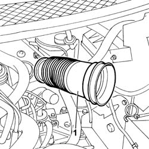
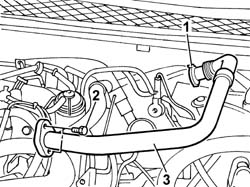

1080C54 PIPE CARRYING EXHAUST GAS FROM E.G.R. VALVE TO INLET MANIFOLD - R + R
- Path
- Procedures > 10 ENGINE > 1080 EXHAUST EMISSION CONTROL SYSTEM > 1080C EXHAUST GAS RECIRCULATION SYSTEM (E.G.R.) > 1080C54 PIPE CARRYING EXHAUST GAS FROM E.G.R. VALVE TO INLET MANIFOLD - R + R
- Kind
- repair procedure (removal / refitting; the operation number is the code)
- Applies to
- engines: 2.0 16V JTD, 2.2 16V JTD; all production periods
- Interactive page
- https://sloeber94.github.io/elrnDB-fUlss/en/#/179007124
Applies to: engines: 2.0 16V JTD; all production periods
 Removing
Removing
 Refitting
RefittingOp. 5010B18 CLIMATE CONTROL UNIT AIR INTAKE - R.R.
See in Op. 1048A10
1. Disconnect the bands and remove the turbocharger flexible air inlet hose.

Applies to: engines: 2.0 16V JTD; all production periods
1. Open the fastening band on the EGR heat exchanger.
- Undo the bolt fixing the pipe to the thermostat.
2. Undo the bolts fixing the intake manifold.
3. Remove the exhaust gas supply pipe from the E.G.R. valve to the intake manifold.

Applies to: engines: 2.0 16V JTD; all production periods
Refitting
Removing- Fit the exhaust gas supply pipe from the E.G.R. valve to the intake manifold.
- Tighten the bolts fixing the pipe to the intake manifold to torque.
- Tighten the bolt fixing the pipe to the thermostat.
- Connect he fastening band on the EGR heat exchanger.
- Fit the turbochrger flexible air inlet hose.
See in Op. 1048A10
Applies to: engines: 2.2 16V JTD; all production periods
Removing
RefittingOp. 5010B18 CLIMATE CONTROL UNIT AIR INTAKE - R.R.
See in Op. 1048A10
1. Disconnect the bands and remove the turbocharger flexible air inlet hose.
Applies to: engines: 2.2 16V JTD; all production periods
1. Open the fastening band on the EGR heat exchanger.
- Undo the bolt fixing the pipe to the thermostat.
2. Undo the bolts fixing the intake manifold.
3. Remove the exhaust gas supply pipe from the E.G.R. valve to the intake manifold.
Applies to: engines: 2.2 16V JTD; all production periods
Refitting
Removing- Fit the exhaust gas supply pipe from the E.G.R. valve to the intake manifold.
- Tighten the bolts fixing the pipe to the intake manifold to torque.
- Tighten the bolt fixing the pipe to the thermostat.
- Connect the fastening band on the EGR heat exchanger.
- Fit the turbochrger flexible air inlet hose.
See in Op. 1048A10
Topics linked from this page (1)
Topics that link to this page (7)
- 1016C10 SINGLE CYLINDER HEAD - R.R. AND REPLACE GASKET
- 1016B10 SINGLE CAMSHAFT HOUSING - REPLACE GASKET
- 1016B12 SINGLE CAMSHAFT HOUSING - R.R. WITH TIMING BELT REMOVED - REPLACE GASKET
- 1036C10 CAMSHAFTS IN CAMSHAFT HOUSING - R.R - INCLUDES CAMSHAFT HOUSING REPLACEMENT, IF NECESSARY
- 1064A19 TURBOCHARGER UNIT - EXHAUST MANIFOLD - COUPLING SLEEVE AND EXHAUST PIPES - R R
- 1088C30 THERMOSTAT UNIT - R+R
- 5520C COLD STARTING SYSTEM (DIESEL ENGINES)